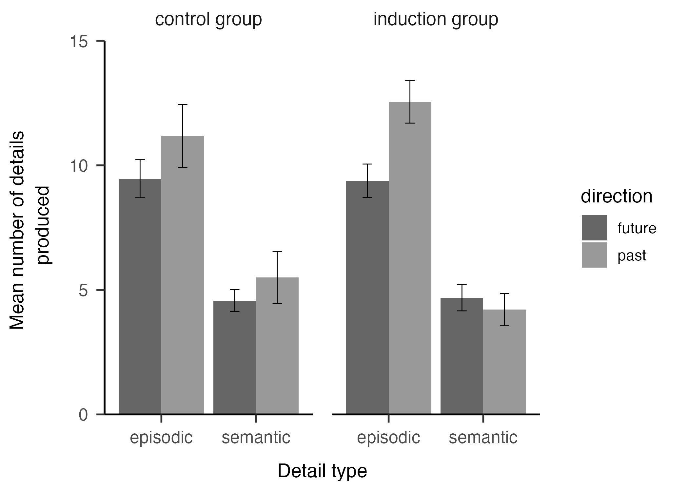
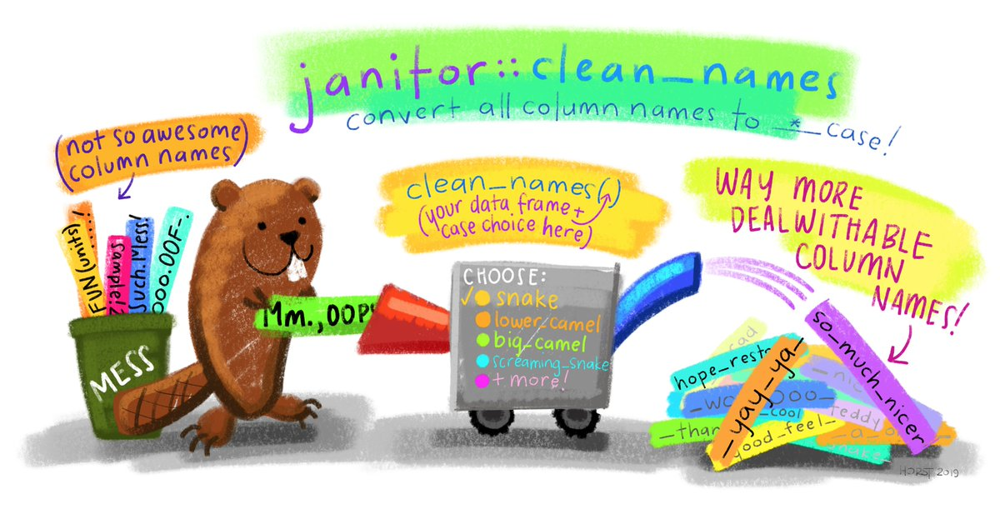

Jen Richmond
home
about
blog
data viz
30DayChartChallenge
TidyTuesday
30DayMapChallenge
projects
Email
Categories
All
(21)
data wrangling
(1)
ggplot
(2)
idhgt
(1)
python
(1)
blog
Want to support my blog?
TEFAP order cancellations
On BlueSky this afternoon I came across some data that ProPublica were sharing on github about cancelled food orders funded by The Emergency Food Assistance Program (TEFAP).…
Jen Richmond
Oct 17, 2025
Rethinking data science education in the age of genAI
I spent a lovely few days in Melbourne last week visiting Monash and attending WOMBAT (Workshop Organised by Monash Business Analytics Team).
Jenny Richmond Ph.D
Oct 5, 2025
font notes
I have been getting brave with fonts in my ggplots and running into problems with fonts not appearing the same in my quarto doc and exported png files. BlueSky advice was…
Jen Richmond
Jun 1, 2025
selective annotations
My friend Lisa called me with a ggplot challenge the other day. She was trying to work out how to have only some of her points labelled with annotations. Here are some notes…
Jen Richmond
May 23, 2025
what happened? what now?
I think about academia like a train that I jumped on way back when I was a baby scientist. The first time one of your professors sees potential in you, they invite you to…
Jen Richmond
May 9, 2025
30dayChartChallenge debrief
Where did April go? The #30DayChartChallenge is all done. As predicted, I didn’t manage to do it every day, but committing to try and make charts related to each of the…
Jen Richmond
May 2, 2025
Pūteketeke Pandemonium
This post is my first attempt at a
closeread
scrollytelling story. It tells the story of the Pūteketeke controversy that plagued the Forest and Bird NZ
Bird of the Century
co…
Jen Richmond
Apr 20, 2025
what i learned at positconf
Several weeks ago I attended #positconf in Seattle. I was super grateful to receive funding for my travel, stay, and registration from Posit as an Opportunity Scholar and…
Jen Richmond
Oct 3, 2024
learning python
python
When you are exploring a far off land and only know a tiny bit of the language they speak there, you always carry a little dictionary with commonly used phrases translated…
Jen Richmond
Jul 4, 2024
rowwise %>% mean
data wrangling
When you have data from a survey, the responses for each item are most often listed in different variables. Generally you have to average across the items to get a mean…
Jen Richmond
May 24, 2023

error bars on plots
idhgt
ggplot
Repurposing this APA figures post as a IDHTG (I don’t have to google) post.
Jen Richmond
Apr 25, 2023
colours that R knows
ggplot
I have been working through the ggplot R Advent calendar by Kiirsti Owen with some lovely RLadies friends and we got up to Day 15 where we started controlling colours in…
Jen Richmond
Dec 14, 2022
git hints
I am getting pretty good at avoiding git merge conflicts by always remembering to pull before I push when using github. But the terminal in RStudio has been giving me this…
Jen Richmond
Sep 28, 2022
analysing smartwatch data
Sometimes trying to replicate what someone is doing in a blogpost you find on twitter is a great way to learn something new. I am half heartedly thinking about trying to…
Jen Richmond
Jul 13, 2022
using lists in R
One of my goals while on long service leave is to learn some new R things that have been on my radar for a while… the first of these is purrr. The purrr package allows you…
Jen Richmond
Jun 27, 2022
my favourite things about R
I am prepping a talk for R-Ladies Sydney about my favourite R things, including the packages and functions that end up in every script I write.
Jen Richmond
Jan 17, 2022
useful bash commands
I remember working in a cafe in Melbourne with Charles Gray a couple of years ago and watching in awe as she navigated her way around our project files using the terminal…
Jen Richmond
Jan 16, 2022
parameterised penguins
I am beginning a project where we want to create a distill site that has lots of profile pages that all have the same format but pull different data from a dataframe. Here I…
Jen Richmond
Aug 31, 2021
PAT for GitHub
I have been avoiding setting up a Personal Access Token to authenticate my github account for a while because it seemed complicated. Never fear Happy Git with R and
usethis()
…
Jen Richmond
Jun 22, 2021
my first pull request
There are so many lovely packages for colour palettes (see links at the bottom of this post for more).
Jen Richmond
Jan 8, 2021

cleaning penguins with the janitor package
The janitor package by Sam Firke contains probably my FAVOURITE R function:
clean_names()
.
Jen Richmond
Nov 18, 2020
No matching items